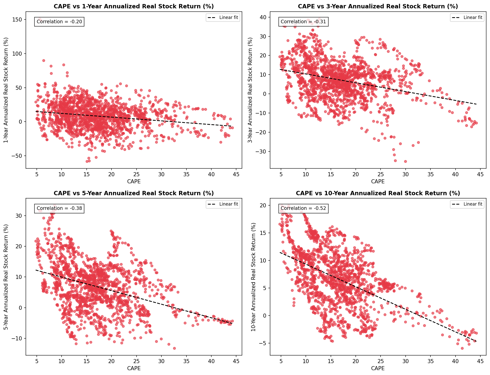
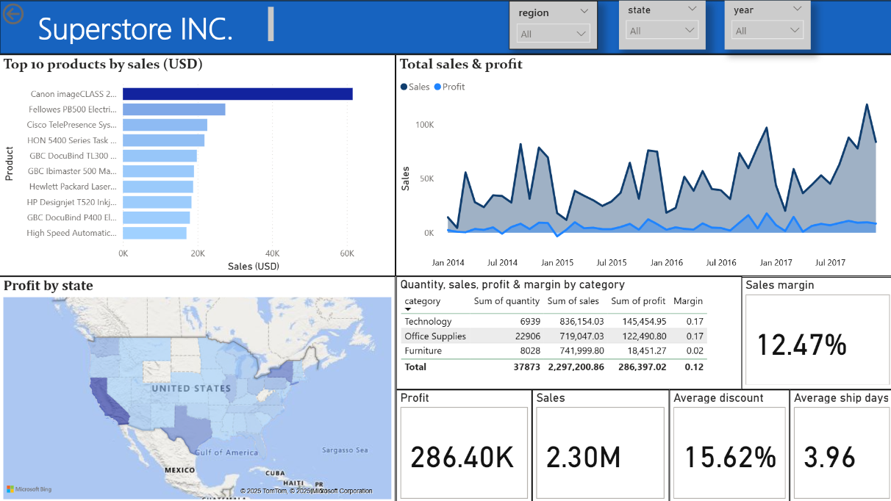

Featured Projects
End-to-end data analytics and econometric projects covering data collection, exploratory analysis, statistical modeling, and interactive dashboards.

Asset Return Predictability
An end-to-end empirical finance project evaluating whether valuation metrics (CAPE and Excess CAPE Yield), real Treasury yields, and investor sentiment can predict future U.S. stock and bond returns across 1-, 3-, 5-, and 10-year investment horizons. The project includes data collection, feature engineering, exploratory data analysis, and time-series econometric modeling using Newey-West HAC standard errors.

Bank Marketing Analysis
End-to-end exploratory analysis of the UCI Bank Marketing dataset. SQL was used to answer key business questions and identify strengths, weaknesses, and opportunities within the bank's marketing campaigns. Findings were presented through an interactive Power BI dashboard.

Superstore Retail Analysis
Exploratory analysis of the Kaggle Superstore dataset using SQL and Power BI. The project evaluates sales performance, profitability, regional trends, and business opportunities through an executive dashboard.